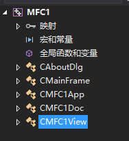

B站黑马学习MFC！学习链接
MFC
1.mfc初始化
1.初始化空项目
新建项目->Windows桌面向导->创建->桌面应用程序exe，空项目!
2.MFC帮助文档
1.在线文档
2.下载离线文档，解压，setup安装。
3.MFC中文手册
3.winapi创建一个窗口
1
2
3
4
5
6
7
8
9
10
11
12
13
14
15
16
17
18
19
20
21
22
23
24
25
26
27
28
29
30
31
32
33
34
35
36
37
38
39
40
41
42
43
44
45
46
47
48
49
50
51
52
53
54
55
56
57
58
59
60
61
62
63
64
65
66
67
68
69
70
71
72
73
74
75
76
77
78
79
80
81
82
83
84
85
86
87
88
89
90
91
92
93
94
95
96
97
98
99
100
101
102
103
104
105
106
107
108
109
110
111
112
113
114
115
116
117
118
119
120
121
122
123
124
125
126
127
128
129
| #include<Windows.h>
LRESULT CALLBACK WindowProc(HWND hwnd,
UINT uMsg,
WPARAM wParam,
LPARAM lParam
)
{
switch (uMsg)
{
case WM_CLOSE:
DestroyWindow(hwnd);
break;
case WM_DESTROY:
PostQuitMessage(0);
break;
case WM_LBUTTONDOWN:
{
int xPos= LOWORD(lParam);
int yPos = HIWORD(lParam);
char buf[1024];
wsprintf(buf, TEXT("鼠标左键X=%d,\ty=%d"), xPos, yPos);
MessageBox(hwnd, buf, TEXT("tips"), MB_OK);
break;
}
case WM_KEYDOWN:
{
MessageBox(hwnd, TEXT("键盘按下"), TEXT("tips"), MB_OK);
break;
}
case WM_RBUTTONDOWN:
{
int xPos = LOWORD(lParam);
int yPos = HIWORD(lParam);
MessageBox(hwnd, TEXT("右键按下"), TEXT("tips"), MB_OK);
break;
}
case WM_PAINT:
{
PAINTSTRUCT ps;
HDC hdc = BeginPaint(hwnd, &ps);
TextOut(hdc, 100, 100, TEXT("HELLO WORLD"), strlen("HELLO WORLD"));
EndPaint(hwnd, &ps);
break;
}
default:
break;
}
return DefWindowProc(hwnd, uMsg, wParam, lParam);
}
int WINAPI WinMain(HINSTANCE hInstance, HINSTANCE hPrevInstance, LPSTR lpCmdLine, int nShowCmd)
{
WNDCLASS wc;
wc.cbClsExtra = 0;
wc.cbWndExtra = 0;
wc.hbrBackground = (HBRUSH)GetStockObject(WHITE_BRUSH);
wc.hCursor = LoadCursor(NULL, IDC_HAND);
wc.hIcon = LoadIcon(NULL, IDI_ERROR);
wc.hInstance = hInstance;
wc.lpfnWndProc = WindowProc;
wc.lpszClassName = TEXT("WIN");
wc.lpszMenuName = NULL;
wc.style = 0;
RegisterClass(&wc);
HWND hwnd = CreateWindow(wc.lpszClassName, TEXT("WINDOWS"), WS_OVERLAPPEDWINDOW, CW_USEDEFAULT, CW_USEDEFAULT, CW_USEDEFAULT, CW_USEDEFAULT, NULL, NULL, hInstance, NULL);
ShowWindow(hwnd, SW_SHOWNORMAL);
UpdateWindow(hwnd);
MSG msg;
while (1)
{
if (GetMessage(&msg, NULL, 0, 0) == FALSE)
{
break;
}
TranslateMessage(&msg);
DispatchMessage(&msg);
}
}
|
4.MFC创建窗口
1
2
3
4
5
6
7
8
9
10
11
12
13
14
15
16
17
18
19
20
21
22
23
24
25
26
27
| #pragma once
#include<afxwin.h>
class MyApp:public CWinApp
{
public:
virtual BOOL InitInstance();
private:
};
class MyFram:public CFrameWnd
{
public:
MyFram();
DECLARE_MESSAGE_MAP()
afx_msg void OnLButtonDown(UINT, CPoint);
afx_msg void OnChar(UINT, UINT, UINT);
afx_msg void OnPaint();
private:
};
|
1
2
3
4
5
6
7
8
9
10
11
12
13
14
15
16
17
18
19
20
21
22
23
24
25
26
27
28
29
30
31
32
33
34
35
36
37
38
39
40
41
42
43
44
45
46
47
48
49
50
51
52
53
54
55
56
57
| #pragma once
#include"mfc.h"
MyApp app;
BOOL MyApp::InitInstance()
{
MyFram* frame = new MyFram;
frame->ShowWindow(SW_SHOWNORMAL);
frame->UpdateWindow();
m_pMainWnd = frame;
return TRUE;
}
BEGIN_MESSAGE_MAP(MyFram,CFrameWnd)
ON_WM_LBUTTONDOWN()
ON_WM_CHAR()
ON_WM_PAINT()
END_MESSAGE_MAP(MyFram, CFrameWnd)
MyFram::MyFram()
{
Create(NULL, TEXT("MFC"));
}
void MyFram::OnLButtonDown(UINT, CPoint point)
{
CString str;
str.Format(TEXT("x=%d , y=%d"), point.x, point.y);
MessageBox(str);
}
void MyFram::OnChar(UINT key, UINT, UINT)
{
CString str;
str.Format(TEXT("按下了%c 键"), key);
MessageBox(str);
}
void MyFram::OnPaint()
{
CPaintDC dc(this);
dc.TextOutW(100, 100, TEXT("helloworld"));
dc.Ellipse(150, 150, 300, 200);
}
|
5.使用mfc向导

对话类，窗体框架，应用程序类，文档类，显示类(所有显示在这里面添加)
1.画图OnPaint
使用OnPaint，view自带画图函数OnDraw就不会显示了。
2.窗口修改
cmainframe的precreatewindow函数。
afx为前缀的函数是全局函数。
调用Create产生 WM_CREATE消息，执行OnCreate：当应用程序通过调用成员函数Create或CreateEx请求创建Windows的窗口时，框架调用这个成员函数。CWnd对象在窗口被创建以后，但是在它变为可见之前接收到对这个函数的调用。OnCreate是在Create或CreateEx成员函数返回之前被调用的。
3.修改标题和图标
在InitInstance()函数下，窗口显示的地方
1
2
3
4
| m_pMainWnd->ShowWindow(SW_SHOW);
m_pMainWnd->UpdateWindow();
m_pMainWnd->SetWindowTextW(TEXT("销售管理"));
m_pMainWnd->SetIcon(LoadIcon(IDI_ICON1),TRUE);
|
4.新建对话框
1.资源文件dialog下插入一个，然后添加控件，为显示控件添加变量，双击操作控件添加执行函数。
2.类clogdia->属性:消息WM_Close关闭函数，重写onok函数就是对话框按下回车执行的操作，oninitdialog重写控件初始化。
5.拆分主窗口
1.生成需要显示的类，项目->添加新项->MFC类
2.主窗口框架中添加一个拆分类，CSplitterWnd m_spliter，然后重写OnCreateClient函数。
3.m_spliter.CreateStatic(this, 1, 2);
m_spliter.CreateView(0, 0, RUNTIME_CLASS(CSelectView), CSize(200, 500), pContext);
m_spliter.CreateView(0, 1, RUNTIME_CLASS(CDispalyView), CSize(600, 500), pContext);
return TRUE;
将主界面拆分为一行两列，左边是CSelectView，右边CDispalyView
6.树视图
1.视图头文件中声明 CTreeCtrl* m_treeCtrl;//树控件和CImageList m_imageList;//图标列表
2.重写OnInitialUpdate函数，对图标列表和树控件初始化
3.编辑=Tvn_Selchanged消息,及树控件 项点击函数。
7.自定义消息，以及挂载
1
2
3
4
5
6
7
8
9
10
11
12
13
14
15
16
17
18
19
20
21
22
23
24
25
26
27
28
29
30
31
32
33
34
35
36
37
38
39
| 1.定义消息宏
#define NM_A (WM_USER+100)
#define NM_B (WM_USER+101)
#define NM_C (WM_USER+102)
#define NM_D (WM_USER+103)
#define NM_E (WM_USER+104)
2.添加到映射列表
ON_MESSAGE(NM_A, OnMyChange)
ON_MESSAGE(NM_B, OnMyChange)
ON_MESSAGE(NM_C, OnMyChange)
ON_MESSAGE(NM_D, OnMyChange)
ON_MESSAGE(NM_E, OnMyChange)
3.添加映射函数声明与实现
afx_msg LRESULT OnMyChange(WPARAM Ipcs,LPARAM IParam);
LRESULT CMainFrame::OnMyChange(WPARAM Ipcs, LPARAM IParam)
{
CCreateContext Context;
switch (Ipcs)
{
case NM_A:
{
Context.m_pNewViewClass = RUNTIME_CLASS(CUserDlg);
Context.m_pCurrentFrame = this;
Context.m_pLastView = (CFormView*)m_spliter.GetPane(0, 1);
m_spliter.DeleteView(0, 1);
m_spliter.CreateView(0, 1, Context.m_pNewViewClass, CSize(600, 500), &Context);
CUserDlg* pNewView = (CUserDlg*)m_spliter.GetPane(0, 1);
m_spliter.RecalcLayout();
pNewView->OnInitialUpdate();
m_spliter.SetActivePane(0, 1);
break;
}
4.发送消息
::是使用winapi的postmessage，不使用mfc包装的postmessage
::PostMessage(AfxGetMainWnd()->GetSafeHwnd(), NM_A, (WPARAM)NM_A, (LPARAM)0);
|
2.TEXT
1
2
3
4
5
6
7
8
9
10
11
12
13
14
15
| 多字节：ASCII码
宽字节：Unicode GBK utf-8
TEXT()// 将多字节转为宽字节 TEXT("aaa")=L"aaa"
TEXT() // 转成程序所使用的字符集，自适应
TCHAR 也有同样功能
strlen统计多字节字符串长度
wcslen统计宽字节字符串长度
char* 转 MFC CString
CString()
CString 转 char*
char*p=cstr.GetBuffer();
LPWSTR https://blog.csdn.net/xwh012510/article/details/86235698
|
文件
1.创建多级目录
1
2
3
4
5
6
7
8
9
10
11
12
13
14
15
16
17
18
19
20
21
22
|
if (!PathIsDirectory(path))
{
CString str = _T("\\");
int pos = path.Find(str, 4);
do
{
CString path1 = path.Left(pos);
CreateDirectory(path1, NULL);
pos = path.Find(str, pos + 2);
if (pos == -1) break;
} while (pos);
}
bool bFind = FileExist(txtPath);
if (bFind)
{
DeleteFile(txtPath);
}
CFile SNFile;
SNFile.Open(txtPath, CFile::modeCreate, NULL);
SNFile.Close();
|
2.写入txt
1
2
3
4
5
6
7
| CString txt;
txt.format(_T("aaa%.2f"),0.555);
CFile SNFile;
SNFile.Open(txtPath, CFile::modeCreate | CFile::modeWrite, NULL);
CStringA txtA = W2A(txt);
SNFile.Write(txtA, txtA.GetLength());
SNFile.Close();
|
3.删除非空文件夹
1
2
3
4
5
6
7
8
9
10
11
12
13
14
15
16
17
18
19
20
21
22
23
| BOOL CDlgMainParCamSet::myDeleteDirectory(CString directory_path)
{
BOOL ret = TRUE;
CFileFind finder;
CString path;
path.Format(_T("%s/*.*"), directory_path);
BOOL bWorking = finder.FindFile(path);
while (bWorking)
{
bWorking = finder.FindNextFile();
if (finder.IsDirectory() && !finder.IsDots())
{
myDeleteDirectory(finder.GetFilePath());
RemoveDirectory(finder.GetFilePath());
}
else
{
DeleteFile(finder.GetFilePath());
}
}
ret = RemoveDirectoryW(directory_path);
return ret;
}
|
控件
1.控件大小
1
2
3
| x,y实际像素值，计算
265 = x * (2/3)
199 = y * (8/13)
|
2.Picture Control
1
2
3
4
5
6
7
8
9
10
11
12
13
14
15
16
17
18
19
20
21
22
23
24
25
26
27
|
void CDlgInspectInfoShow::ShowCode(unsigned char* buf, int len)
{
HGLOBAL hMem = GlobalAlloc(GMEM_FIXED, len);
BYTE* pMem = (BYTE*)GlobalLock(hMem);
memcpy(pMem, buf, len);
IStream* pStream;
HRESULT hr = CreateStreamOnHGlobal(pMem, FALSE, &pStream);
CImage img;
img.Load(pStream);
CWnd* SW_code = this->GetDlgItem(IDC_SHOW_CODE);
CDC* pDC = SW_code->GetDC();
img.Draw(pDC->GetSafeHdc(), 0, 0, 286, 342);
img.Destroy();
pStream->Release();
GlobalFree(hMem);
}
|
错误记录
1.creatWindow函数
creatWindow函数处出现异常0xC0000005: 执行位置 0xCCCCCCCC 时发生访问冲突 。
WNDCLASS类的lpfnWndProc必须定义。
2.出现CTreeView不是基类
加上头文件#include”afxcview.h”
3.报错信息dlgdata.cpp line 40
界面控件删了，相应代码没有删除。